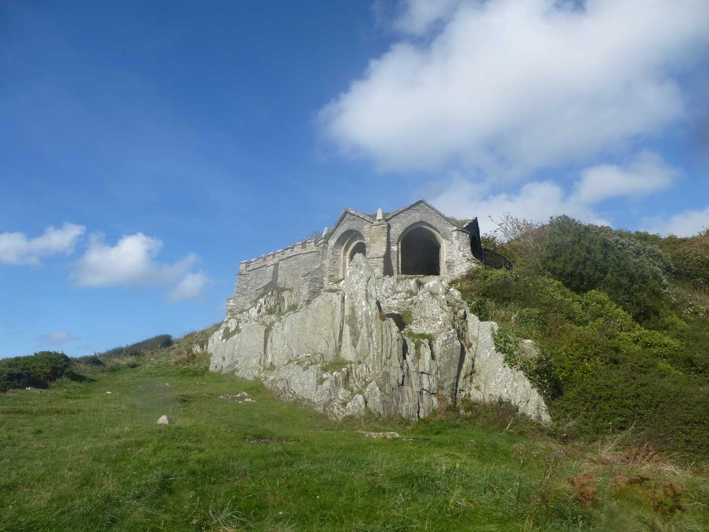
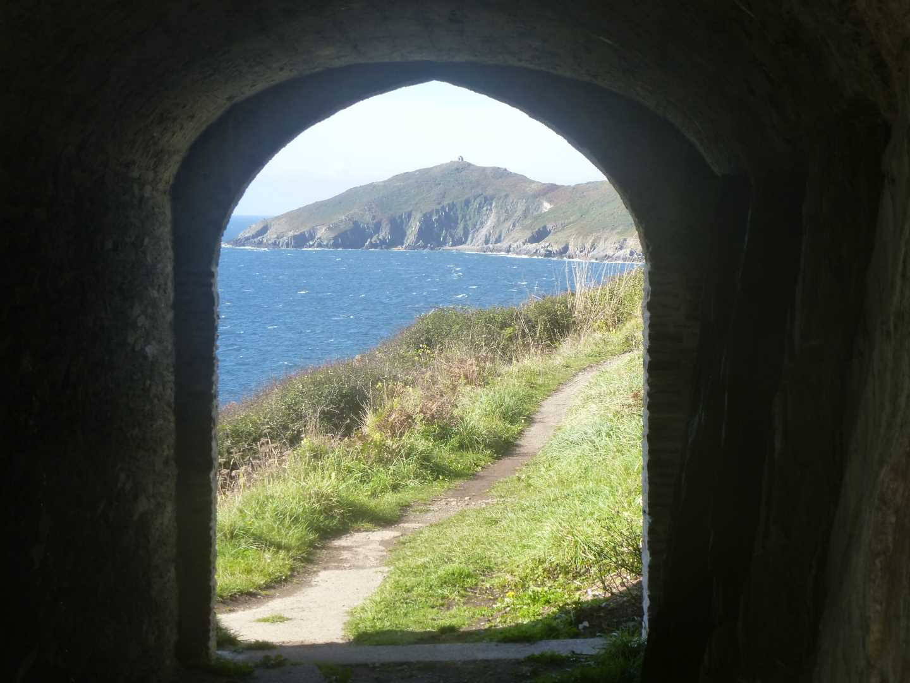

Start Ref: 431 503
End Ref: 431 503
Distance: 5 miles
Time: 3hrs
Our Start Point is the car park in Cawsand, and from here we are going to walk down into the village and towards thebeach. Here, we pick up the coastal path (on our right) as it heads out of the village and on to a wide and fairly easy track out towards our first little point. En route, we pass the old Pier Cellars and have lovely views over our left shoulder out towards the Breakwater and back towards Cawsand and Kingsand.
We continue out to Penlee Point, and just as we are thinking of following the path around to our right, we need to stop and step off the path to our left as just below the path is the rather impressive Grotto.
After taking a few photo`s (using the Grotto as a frame), we are going to step back up on to the path and continue in a westerly direction (keeping the sea on our left) as we follow the footpath around this heel and on towards Rame Head itself. As we get to the Headland, we have the option of continuing on around or taking the steep ascent up to the Chapel. Although continuing around is the footpath we are using, the deviation up to the Chapel is worth the effort.
After we have descended from the Chapel, we are going to continue to follow the coastal footpath around the headland, BUT, beware the steep sides. This is a spot to keep children on leads, in fact when last I did this walk with Dad, we came across one gentleman who was sat, unsure whether to go on or go back, as he was overtaken with that horrible fear of heights and edges.

Luckily, this section does not last for long, and we soon pass Queener Point and the views west over Whitsand Bay, and the path begins to descend towards Polhawn Fort Barton. As the path takes a sharp left just above the Barton, beware not to go right (if we do, no matter, we just rejoin the road a little earlier). Back down to the coast and then start heading up alongside the gravel track we go, and after a short while we come out by the sign pointing out that the Barton can be hired for weddings and functions, right on a crossroads, the same point as if we have turned right just before the Barton. This road is the main section leading from Freathy to Cawsand.
At this road we are going to take the main section (heading East) and as the road then bears 90 degrees right (at Trehill) we are going to leave the road and use the footpath directly in front of us. This footpath takes us into the field and will lead us down hill, which means that we can avoid walking on the road for as long as possible.
Down the field we will go and at the bottom, we go through a little gate into another field – where we turn right – and then come out at the bottom of Forder Hill where we turn right to rejoin the main road. From here, we now just have to follow the road back into Cawsand and the car park where we left the car.
Cawsand and Kingsand are blessed with a number of eating and refreshment establishments, which can be most welcome after a walk such as the one we have just completed, not to mention the lovely beaches on which we can just sit and have an ice cream. The people of Cawsand are also very honest. When Dad and I did this walk, we managed to leave the phone on the roof of the car, and it was still there when we returned several hours later. Thank you villagers of Cawsand.
I hope that you enjoyed this walk as much as we have.